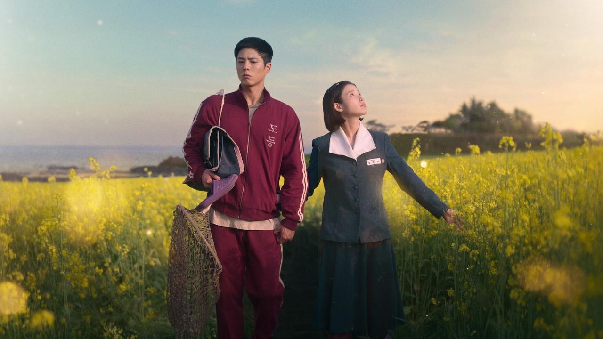
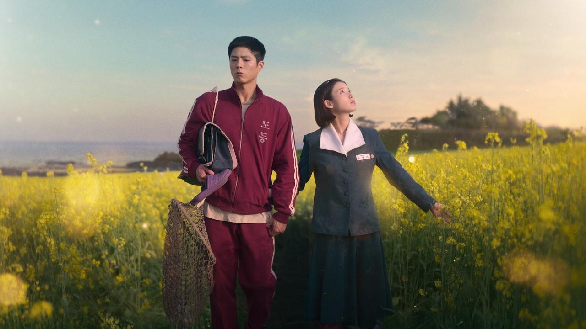

Capitulo 1 - Primavera en un suspiro
Criada por una madre tenaz, la entusiasta Ae-sun tiene sueños mas grandes que la isla donde vive..., pero una inesperada trajedia lo cambia todo
Cada episodio muestra una enseñanza diferente: la importancia de la amistad, el perdón, la autoestima y el amor propio. Los personajes secundarios, con sus ocurrencias y errores, reflejan la realidad de la vida: que a veces es dulce como una mandarina madura… y otras, agria, pero siempre vale la pena seguir adelante. La serie invita a mirar la vida con optimismo, demostrando que cuando todo parece complicado, siempre hay algo por lo que sonreír. 🍊
 
